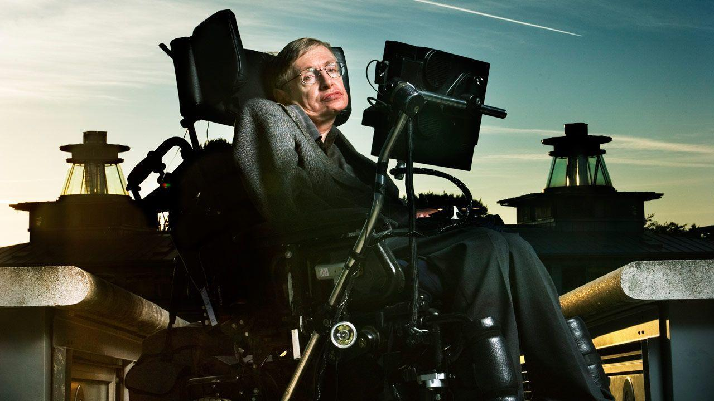

Stephen Hawking
An examplary theoretical physicist

THE TIMELINE
- Jan. 8, 1942: Born in Oxford, England, the eldest of four children born to Frank Hawking, a biologist, and Isobel Hawking, a medical research secretary.
- 1952: Attends St. Albans School.
- 1959: Receives scholarship to attend University College, Oxford, from which he graduates with a degree in Natural Science.
- 1962: Begins graduate research in cosmology at Cambridge University.
- 1963: Diagnosed with the degenerative nerve disorder ALS, or Lou Gehrig’s disease, at the age of 21. He is given two years to live.
- July 14, 1965: Marries his first wife, Jane Wilde, a modern languages student he met at Cambridge.
- 1967: The couple’s first son, Robert, is born.
- 1970: Jane gives birth to a daughter, Lucy.
- 1974: Elected as a fellow of the Royal Society at age 32, one of the youngest people to receive the honor.
- 1979: Becomes Lucasian Professor of Mathematics at Cambridge, a prestigious position once held by Isaac Newton. Hawking holds the post until 2009. Jane gives birth to a third child, Timothy.
- 1985: Admitted to a hospital in Geneva with pneumonia. He survives after an operation, but loses what remained of his speech. The next year he begins communicating through the electronic voice synthesizer that gave him his trademark robotic “voice.”
- 1988: Publishes “A Brief History of Time,” a book on cosmology aimed at the general public that becomes an instant best-seller.
- 1989: Made a Companion of Honor by Queen Elizabeth II
- 1995: Marries his nurse, Elaine Mason.
- 2007: Divorces Elaine Mason
- 2014: Hawking’s life is celebrated in the Oscar-winning biopic “The Theory of Everything,” based on the memoir “Travelling to Infinity: My Life with Stephen,” by Jane Hawking.
"Intelligence is the ability to adapt to change." - Stephen Hawking